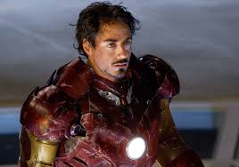

|  | Una de las extravagancias más grandes de Tony Stark en los cómics fue la de adquirir del Gobierno de EEUU la propiedad sobre la famosa Área 51. ¿Se quedaría también con el platillo de Roosevelt? |
|---|---|
| Su personalidad encaja con el modelo ENTP | |
Y no es el típico insulto de patio de colegio. Anthony es hijo de dos agentes de SHIELD, cuya relación se enturbió debido a que uno era agente durmiente de HYDRA. Los Stark adoptaron al bebé Tony cuando su primogénito Arno nació con una enfermedad fatal que les obligó a internarlo en un centro médico especializado. Hay mucha más tela detrás de esta historia titulada Iron Man: The Secret Origin of Tony Stark. |